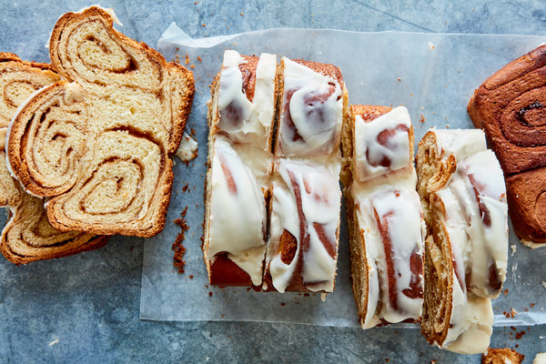

Cinnamon Roll Bread
Back to homepage

Description
With swirls of cinnamon throughout, this bread will add a sweet touch to your mornings. This tastes best when served warm, so if it happens to last more than a day, I recommend warming slightly in the microwave or toaster oven and adding a touch of salted butter.
Ingredients
Bread Ingredients
- 2 cups all-purpose flour
- 1 tablespoon baking powder
- 1/2 teaspoon salt
- 1/2 cup granulated sugar
- 1 egg - room temperature
- 1 cup milk
- 2 teaspoons vanilla extract
- 1/3 cup plain greek yogurt, or sour cream
Swirl Ingredients
- 1/3 cup granulated sugar
- 2 teaspoons cinnamon
- 2 tablespoons butter, melted and cooled slightly
Glaze Ingredients
- 1/2 cup powdered sugar
- 2-3 teaspoons cream or milk (as needed for consistency)
Steps
- Preheat oven to 350 degrees Fahrenheit.
- Butter or spray a glass loaf pan.
- In a small bowl, combine the flour, baking powder, salt, and sugar.
- In a large bowl, whisk together the egg, milk, vanilla, and yogurt or sour cream.
- Add the flour mixture to the egg mixture, stirring just to combine using a spoon or wooden spoon.
- Pour into prepared loaf pan.
- In a small bowl, stir the swirl ingredients together.
- Drop by teaspoonfuls onto the top of the bread, then use a knife to swirl it a few times into the batter.
- Bake for 45-50 minutes or until a toothpick comes out clean when inserted into the center.
- Remove from the oven and cool for 15 minutes in the pan on a wire rack.
- Remove bread from the pan and cool completely on the rack.
- Meanwhile, make the glaze by whisking the ingredients together in a small bowl until smooth, add a dab of mik at a time until a good drizzling consistency is reached.
- When the bread is completely cool, drizzle the glaze over the top.